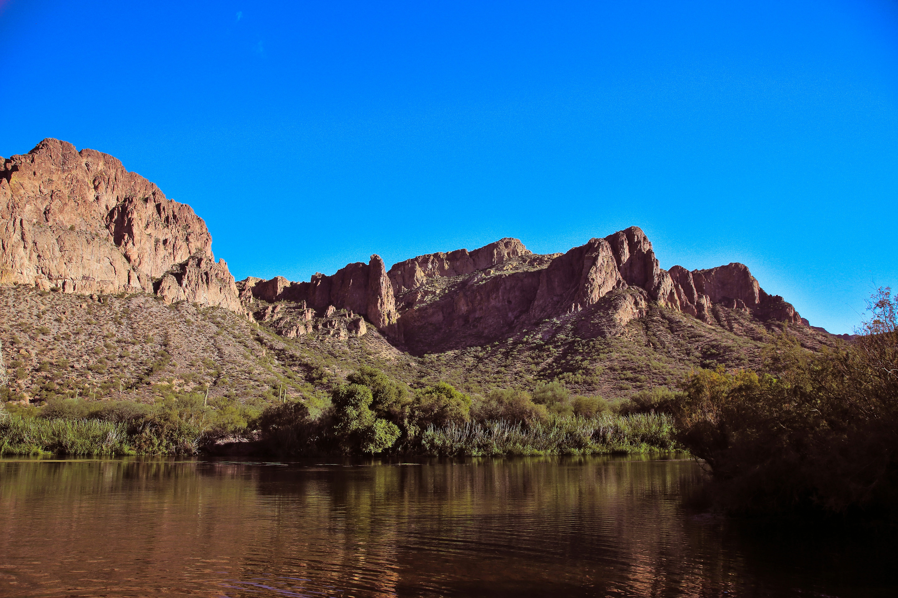
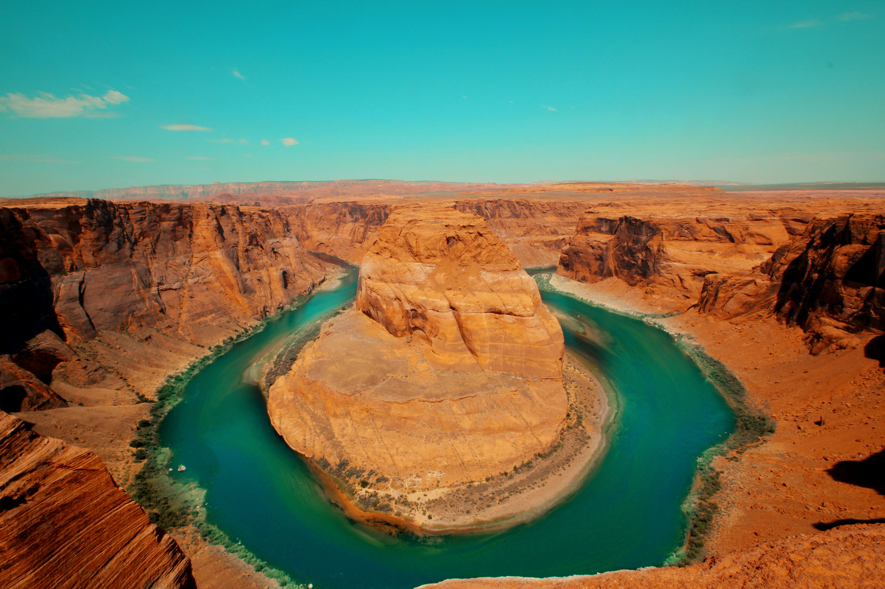

Rivers

Salt River
Headwaters: Small streams in the Mogollon Rim and the White Mountains
Mouth: Joins the Gila River southwest of Phoenix, near the north tip of the Estrella Mountains.
Course: Runs west through the Sonoran Desert.

Colorado River
Headwaters: Rocky Mountains at La Poudre Pass Lake, Colorado
Mouth: Morelos Dam, Mexico
Course: Runs southwest through Colorado Plateau in western Colorado, southeastern Utah, and northwestern Arizona where it flows through the Grand Canyon. It turns south near Las Vegas, forming the Arizona-Nevada border and then the Arizona-California border before entering Mexico.